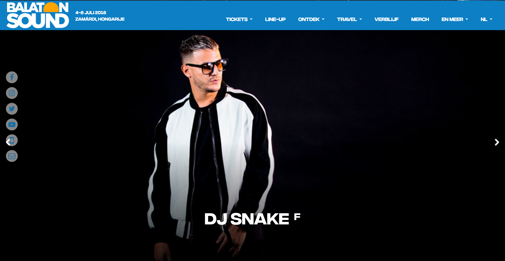
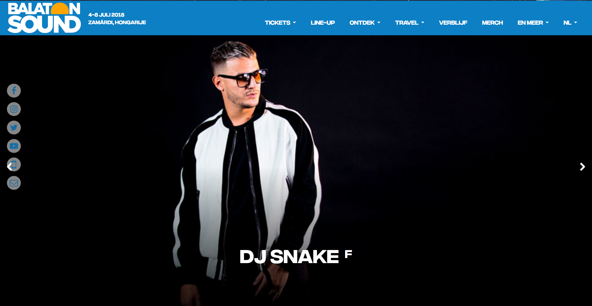

Concurrentie Analyse
pluspunten:
- Knop tickets staat eerst
- Extra knop koop tickets in geel
- Felle en aantrekkelijke kleuren en motieven
- Rolling news flash band
- Directe knop om line-up af te drukken
- Social media buttons vast en duidelijk in footer
- Links naar belangrijke pagina's in footer
minpunten:
- Eerst op menu knop klikken voor je opties krijgt
- Enkel nieuws op frontpagina
- Druk, veel info tegelijk
- Lange laadtijd foto's op pagina's na doorklikken
pluspunten:
- Alternatieve feer
- Sidebar met belangrijke links altijd in beeld
- Paarse knop boven voor tickets
- Ticket knop ook in sidebar
- Duidelijke hashtag naast ticket-knop
- Links met gelijksoortige artiesten
- Link naar officiële spotify playlist
minpunten:
- Afleidende en haperende animaties
- Lange laadtijd
- Footer met een groot leeg vlak
- Sponsors onderaan horen niet bij geheel
- Warrige programma opmaak met veel tekst
- Slecht contrast tussen beelden en tekst
pluspunten:
- Zomerse uitstraling
- Zwevende social media knoppen
- Verschillende soorten tickets bestellen via homepage
- Countdown clock aanwezig op homepagina
- Spotify playlist direct afspeelbaar
- Scrollen tussen sponsors
- Bij line-up mogelijkheid om direct muziek van artiest te beluisteren zonder doorklikken
minpunten:
- Flitsende foto's storen en leiden af
- Oogt kinderlijk
- Footer nodigt niet uit om te bekijken
- Foutmelding als je op de knop 'ontdek' klikt

 
